<title>Site CDI</title>
<link rel="preconnect" href="https://fonts.googleapis.com">
<link rel="stylesheet" href="https://fonts.googleapis.com/css2?family=Montserrat:wght@400;500;700&family=Roboto:wght@400;500;600;700;800&display=swap">
<link rel="stylesheet" href="https://fonts.googleapis.com/css2?family=Material+Symbols+Outlined:opsz,wght,FILL,GRAD@24,400,0,0&display=block">
<style>
  /* Layout: site do CDI com 5 páginas (Início, Eventos, Professores, Guia, Vida no campus)
     trocadas por âncora; seções em largura cheia com os trilhos azuis laterais do Figma. */
  :root {
    --bg: #ffffff;
    --surface: #ffffff;
    --fg: #060606;
    --muted: #4a4d63;
    --blue: #0108f8;
    --on-blue: #ffffff;
    --line: #0108f8;
    --ink-line: #000250;
    --band: #e4e5ff;
    --glass: rgba(255, 255, 255, 0.78);
    --hair: #c9ccfb;
    --slot: #eef0ff;
    --slot-fg: #3c43c9;
    --avatar: #d9d9d9;
    --foot: #000000;
    --on-foot: #ffffff;
    --logo-on-light: block;
    --logo-on-dark: none;
    --font-display: "Roboto", "Helvetica Neue", Arial, sans-serif;
    --font-body: "Montserrat", "Segoe UI", Arial, sans-serif;
  }
  @media (prefers-color-scheme: dark) {
    :root:not([data-theme="light"]) {
      --bg: #0b0c1a; --surface: #12142a; --fg: #eceefb; --muted: #b5b9d6;
      --blue: #6f78ff; --on-blue: #ffffff; --line: #4c56ff; --ink-line: #4c56ff; --band: #171a3a;
      --glass: rgba(11, 12, 26, 0.84); --hair: #2f3466; --slot: #1a1d3a; --slot-fg: #a9afff; --avatar: #2c2f4d;
      --foot: #05060d; --on-foot: #eceefb; --logo-on-light: none; --logo-on-dark: block;
      color-scheme: dark;
    }
  }
  :root[data-theme="dark"] {
    --bg: #0b0c1a; --surface: #12142a; --fg: #eceefb; --muted: #b5b9d6;
    --blue: #6f78ff; --on-blue: #ffffff; --line: #4c56ff; --ink-line: #4c56ff; --band: #171a3a;
    --glass: rgba(11, 12, 26, 0.84); --hair: #2f3466; --slot: #1a1d3a; --slot-fg: #a9afff; --avatar: #2c2f4d;
    --foot: #05060d; --on-foot: #eceefb; --logo-on-light: none; --logo-on-dark: block;
    color-scheme: dark;
  }
  html { scroll-behavior: smooth; }
  @media (prefers-reduced-motion: reduce) { html { scroll-behavior: auto; } * { transition: none !important; } }
  body { background: var(--bg); color: var(--fg); font-family: var(--font-body); font-size: 16px; }
  h1, h2, h3 { text-wrap: balance; }
  .ms { font-family: "Material Symbols Outlined"; font-weight: normal; font-style: normal; font-size: 24px; line-height: 1;
        letter-spacing: normal; text-transform: none; display: inline-block; white-space: nowrap; direction: ltr;
        -webkit-font-smoothing: antialiased; font-feature-settings: "liga"; }
  .gutter { padding-left: max(16px, env(safe-area-inset-left, 0px)); padding-right: max(16px, env(safe-area-inset-right, 0px)); }
  .grad-card { background: linear-gradient(180deg, var(--blue) 0%, var(--blue) 45%, var(--band) 100%); }
  .logo-light { display: var(--logo-on-light); }
  .logo-dark { display: var(--logo-on-dark); }
  :focus-visible { outline: 3px solid var(--blue); outline-offset: 3px; border-radius: 4px; }
  #root:empty::before { content: "Carregando…"; display: block; padding: 48px 16px; font-family: var(--font-body); color: var(--muted); }
</style>

<script src="https://cdn.tailwindcss.com/3.4.17"></script>
<script>
  tailwind.config = {
    theme: {
      extend: {
        colors: {
          bg: "var(--bg)", surface: "var(--surface)", fg: "var(--fg)", muted: "var(--muted)",
          blue: "var(--blue)", onblue: "var(--on-blue)", line: "var(--line)", inkline: "var(--ink-line)",
          band: "var(--band)", glass: "var(--glass)", hair: "var(--hair)", slot: "var(--slot)",
          slotfg: "var(--slot-fg)", avatar: "var(--avatar)", foot: "var(--foot)", onfoot: "var(--on-foot)",
        },
        fontFamily: { display: "var(--font-display)", body: "var(--font-body)" },
        maxWidth: { page: "1440px" },
      },
    },
  };
</script>
<script src="https://cdnjs.cloudflare.com/ajax/libs/react/18.3.1/umd/react.production.min.js"></script>
<script src="https://cdnjs.cloudflare.com/ajax/libs/react-dom/18.3.1/umd/react-dom.production.min.js"></script>
<script src="https://unpkg.com/@babel/standalone@7.24.7/babel.min.js"></script>

<div id="root"></div>

<script type="text/babel" data-presets="react">
const { useState, useEffect } = React;

/* ---------------------------------------------------------------------------
   Imagens (pasta img/, trazidas do site antigo). Para trocar uma imagem,
   substitua o arquivo ou o caminho aqui.
--------------------------------------------------------------------------- */
const foto = (n) => `img/fotos/${String(n).padStart(2, "0")}.jpg`;
const ASSETS = {
  logo: "img/logo.svg",
  mascote: "img/pinguim-home.png",
  fotoEquipe: foto(18),
  visitas: [4, 20, 22, 15, 0, 2, 3, 19, 16, 17, 21, 7].map(foto),
  cursoSI: "img/bsi.webp", cursoTADS: "img/tads.webp",
  realizados: {
    "Integrações": [25, 26, 27, 29, 30, 13, 14, 1, 6].map(foto),
    "Workshop": [9, 10, 8].map(foto),
    "Campeonatos": [12, 23, 31].map(foto),
    "Reuniões": [11, 24, 28].map(foto),
  },
  mapaCampus: "img/mapa.jpg",
  globo: "img/aviao.svg",
  pinguim: "img/pinguim.jpg",
  check: "img/check.svg",
};

/* Links dos botões (site antigo do CDI, site da FT e Prefeitura Universitária de Limeira). */
const LINKS = {
  curriculoSI: "https://www.dac.unicamp.br/sistemas/catalogos/grad/catalogo2026/cursos/94g/curriculo.html",
  curriculoTADS: "https://www.dac.unicamp.br/sistemas/catalogos/grad/catalogo2026/cursos/36t/curriculo.html",
  cursoIA: "https://www.ft.unicamp.br/pt-br/graduacao/cursos/ia",
  salas: "https://sistemas.ft.unicamp.br/salas",
  wifi: "https://www.ft.unicamp.br/pt-br/acessorapido/wifi",
  microsoft: "https://www.ft.unicamp.br/pt-br/acessorapido/msdn",
  carreiras: "https://carreiras.unicamp.br",
  tccEstagio: "https://www.ft.unicamp.br/pt-br/graduacao/tccestagio",
  servicoSocial: "https://www.ft.unicamp.br/pt-br/sae/servicosocial",
  orientacao: "https://www.ft.unicamp.br/pt-br/sae/oe",
  sappe: "https://www.ft.unicamp.br/pt-br/sae/sappe",
  biblioteca: "https://www.ft.unicamp.br/pt-br/biblioteca",
  organizacoes: "https://www.ft.unicamp.br/sites/default/files/organizacoes-estudantis.pdf",
  comoChegar: "https://www.google.com/maps/search/?api=1&query=Rua+Paschoal+Marmo+1888+Limeira+SP",
  ruHorarios: "https://prefeituralimeira.unicamp.br/produto/horarios-2/",
  ruRecarga: "https://prefeituralimeira.unicamp.br/produto/recarga-cartao/",
  intercampHorarios: "https://prefeituralimeira.unicamp.br/produto/horarios/",
  circularDiurno: "https://prefeituralimeira.unicamp.br/wp-content/uploads/sites/35/2024/03/Horarios_Itinerarios_Circular_Unicamp-2-1024x577.png",
  circularNoturno: "https://prefeituralimeira.unicamp.br/wp-content/uploads/sites/35/2025/01/Rota_noite.pdf",
  circularHorarios: "https://prefeituralimeira.unicamp.br/produto/horarios-circular/",
  circularTempoReal: "https://prefeituralimeira.unicamp.br/produto/monitoramento-em-tempo-real/",
  catalogoCursos: "https://www.dac.unicamp.br/portal/graduacao/catalogos-de-cursos",
  projetosExtensao: "https://docs.google.com/document/d/1T6B1A4koQeG_6_vE9ruzDnBsRqpht40o1UwKLTrWO5Y/edit?usp=sharing",
  grupoVagas: "https://chat.whatsapp.com/IeXDZAw7b2o303ed8oY0xw",
  gruposMaterias: "https://chat.whatsapp.com/JdQ4GFmHM5LKHYA8sz1i23",
  intercambio: "http://www.internationaloffice.unicamp.br/",
  iniciacao: "https://prp.unicamp.br/iniciacao-cientifica/pibic-pibiti/programas/",
  intercampInfo: "https://prefeituralimeira.unicamp.br/produto/intercamp/",
  intercampReserva: "https://sistemas.prefeituralimeira.unicamp.br/intercamp/",
  circular: "https://prefeituralimeira.unicamp.br/produto/circular-unicamp/",
  cardapio: "https://sistemas.prefeituralimeira.unicamp.br/RU/view/site/cardapio.php",
  videoFT: "https://www.youtube.com/watch?v=8pzCYwxIW8k",
  instagram: "https://www.instagram.com/cdi.unicamp/",
  linkedin: "https://www.linkedin.com/in/cdi-ft-unicamp/",
  email: "comissao.informatica.ft@gmail.com",
};

/* ---------------------------------------------------------------------------
   Hora de Limeira (America/Sao_Paulo), atualizada a cada 30 s.
--------------------------------------------------------------------------- */
function horaSP() {
  const d = new Date(new Date().toLocaleString("en-US", { timeZone: "America/Sao_Paulo" }));
  const iso = `${d.getFullYear()}-${String(d.getMonth() + 1).padStart(2, "0")}-${String(d.getDate()).padStart(2, "0")}`;
  return { dia: d.getDay(), min: d.getHours() * 60 + d.getMinutes(), iso };
}
function useAgora() {
  const [agora, setAgora] = useState(horaSP);
  useEffect(() => { const t = setInterval(() => setAgora(horaSP()), 30000); return () => clearInterval(t); }, []);
  return agora;
}
const paraMin = (h) => { const [a, b] = h.split(":").map(Number); return a * 60 + b; };
const formataEspera = (m) => (m < 60 ? `em ${m} min` : `em ${Math.floor(m / 60)} h ${String(m % 60).padStart(2, "0")} min`);

/* ---------------------------------------------------------------------------
   CARDÁPIO DO RU (Restaurante do Campus I).
   Fonte: sistemas.prefeituralimeira.unicamp.br/RU/view/site/cardapio.php
   O site da Prefeitura não permite leitura direta pelo navegador de outro site
   (sem CORS). No site publicado, troque esta lista pela resposta de um endpoint
   (ex.: GET /api/cardapio?data=AAAA-MM-DD) que busque e converta a página.
--------------------------------------------------------------------------- */
const prato = (acompanhamento, principal, guarnicao, salada, sobremesa, refresco, nota) => ({ acompanhamento, principal, guarnicao, salada, sobremesa, refresco, nota });
const NOTA_PADRAO = "Contém glúten no pão. Não contém ovos e lactose.";
const CARDAPIO = {
  cafe: "Pão francês, margarina, geleia e fruta. Leite, café e achocolatado.",
  dias: [
    { data: "2026-10-14", rotulo: "Qua", dia: "14/10",
      almoco: { padrao: prato("Arroz e feijão", "Frango caipira", "Virado de escarola", "Salada de berinjela", "Laranja", "Refresco de abacaxi", NOTA_PADRAO),
                vegano: prato("Arroz integral e feijão", "Lentilha ao vinagrete quente", "Virado de escarola", "Salada de berinjela", "Laranja", "Refresco de abacaxi", NOTA_PADRAO) },
      jantar: { padrao: prato("Arroz e feijão", "Moqueca de tilápia", "Legumes sauté (cenoura, chuchu e vagem)", "Alface, tomate e cebola", "Barra de cereal", "Abacaxi", "Contém glúten no pão e na barra de cereal. Não contém ovos e lactose."),
                vegano: prato("Arroz integral e feijão", "Moqueca de ervilha", "Legumes sauté (cenoura, chuchu e vagem)", "Alface, tomate e cebola", "Barra de cereal", "Abacaxi", "Contém glúten no pão e na barra de cereal. Não contém ovos e lactose.") } },
    { data: "2026-10-15", rotulo: "Qui", dia: "15/10",
      almoco: { padrao: prato("Arroz e feijão", "Carne de panela ao molho champignon", "Repolho na salsa", "Beterraba ralada", "Doce de abóbora", "Refresco de caju", NOTA_PADRAO),
                vegano: prato("Arroz integral e feijão", "Picadinho de PTS com mandioca e espinafre", "Repolho na salsa", "Beterraba ralada", "Doce de abóbora", "Refresco de caju", NOTA_PADRAO) },
      jantar: { padrao: prato("Arroz e feijão", "Frango ao molho de mostarda", "Abobrinha ao alho", "Cenoura ralada", "Banana nanica", "Caju", NOTA_PADRAO),
                vegano: prato("Arroz integral e feijão", "Almôndega de soja ao sugo", "Abobrinha ao alho", "Cenoura ralada", "Banana nanica", "Caju", "Contém glúten no pão e na almôndega de soja. Não contém ovos e lactose.") } },
    { data: "2026-10-16", rotulo: "Sex", dia: "16/10",
      almoco: { padrao: prato("Arroz e feijão", "Bife de copa lombo ao vinagrete", "Virado de banana", "Acelga com rabanete", "Maçã gala", "Refresco de manga", NOTA_PADRAO),
                vegano: prato("Arroz integral e feijão", "Ervilha napolitana com cenoura e pimentão", "Virado de banana", "Acelga com rabanete", "Maçã gala", "Refresco de manga", NOTA_PADRAO) },
      jantar: { padrao: prato("Arroz e feijão", "Cubos de patinho ao molho rôti", "Mandioca na salsa", "Tomate", "Laranja", "Manga", NOTA_PADRAO),
                vegano: prato("Arroz integral e feijão", "Grão-de-bico com abóbora e couve-flor", "Mandioca na salsa", "Tomate", "Laranja", "Manga", NOTA_PADRAO) } },
    { data: "2026-10-17", rotulo: "Sáb", dia: "17/10", fds: true,
      almoco: { padrao: prato("Arroz e feijão", "Iscas bovinas aceboladas com shoyu", "Macarrão alho e óleo", "Almeirão", "Banana nanica", "Refresco de maracujá", "Contém glúten no pão. Contém glúten e ovos no macarrão alho e óleo. Não contém lactose."),
                vegano: prato("Arroz integral e feijão", "Grão-de-bico com mandioquinha, brócolis e tomate", "Macarrão integral alho e óleo", "Almeirão", "Banana nanica", "Refresco de maracujá", "Contém glúten no pão e no macarrão integral. Não contém lactose.") },
      jantar: { padrao: prato("Arroz e feijão", "Bife de copa lombo na salsa", "Couve refogada", "Alface", "Maçã gala", "Maracujá", NOTA_PADRAO),
                vegano: prato("Arroz integral e feijão", "Soja em grãos com azeitona, tomate e chuchu", "Couve refogada", "Alface", "Maçã gala", "Maracujá", NOTA_PADRAO) } },
    { data: "2026-10-18", rotulo: "Dom", dia: "18/10", fds: true,
      almoco: { padrao: prato("Arroz e feijão", "Sassami ao molho de bacon", "Abóbora cabotiá com alho frito", "Tomate", "Laranja", "Refresco de morango", NOTA_PADRAO),
                vegano: prato("Arroz integral e feijão", "Feijão-fradinho com abobrinha e cenoura", "Abóbora cabotiá com alho frito", "Tomate", "Laranja", "Refresco de morango", NOTA_PADRAO) },
      jantar: null },
  ],
};

/* ---------------------------------------------------------------------------
   CIRCULAR UNICAMP LIMEIRA (Prefeitura Universitária). Dias úteis.
   Colunas: saída FT, FCA, FT (lateral), AABB, chegada FT (ponto final).
   Até 18h40 roda a rota diurna (passa pela AABB); depois, a noturna.
--------------------------------------------------------------------------- */
const CIRCULAR = [
  ["A", "06:40", "06:55", "07:00", "07:10", "07:20"], ["B", "07:00", "07:15", "07:20", "07:30", "07:40"],
  ["A", "07:20", "07:35", "07:40", "07:50", "08:00"], ["B", "07:40", "07:55", "08:00", "08:10", "08:20"],
  ["A", "08:00", "08:15", "08:20", "08:30", "08:40"], ["A", "12:00", "12:15", "12:20", "12:30", "12:40"],
  ["B", "12:20", "12:35", "12:40", "12:50", "13:00"], ["A", "12:40", "12:55", "13:00", "13:10", "13:20"],
  ["B", "13:00", "13:15", "13:20", "13:30", "13:40"], ["A", "13:20", "13:35", "13:40", "13:50", "14:00"],
  ["B", "13:40", "13:55", "14:00", "14:10", "14:20"], ["B", "17:30", "17:45", "17:50", "18:00", "18:10"],
  ["A", "18:00", "18:15", "18:20", "18:30", "18:40"], ["B", "18:30", "18:45", "18:50", null, "19:05"],
  ["A", "19:00", "19:15", "19:20", null, "19:35"], ["A", "21:30", "21:45", "21:50", null, "22:05"],
  ["B", "22:00", "22:15", "22:20", null, "22:35"], ["A", "22:30", "22:45", "22:50", null, "23:05"],
  ["B", "23:00", "23:15", "23:20", null, "23:35"], ["A", "23:15", "23:30", "23:35", null, "23:50"],
].map(([onibus, ft, fca, lateral, aabb, fim], i) => ({ n: i + 1, onibus, ft, fca, lateral, aabb, fim }));

/* Rastreamento ao vivo (Fleetmap), links públicos da página da Prefeitura. */
const CIRCULAR_AO_VIVO = [
  { nome: "Veículo 1", horarios: "06:40 · 07:00 · 07:40", url: "https://eta.fleetmap.io/pt?token=vlha2ycc24s7wve54pe2ob" },
  { nome: "Veículo 2", horarios: "07:20 · 08:00 · 12:20 · 13:00 · 13:40 · 17:30 · 18:00 · 18:30 · 19:00", url: "https://eta.fleetmap.io/pt?token=1lg2i90gsswap3zt5pvqg" },
  { nome: "Veículo 3", horarios: "12:00 · 12:40 · 13:20 · 21:30 · 22:00 · 22:30 · 23:00 · 23:15", url: "https://eta.fleetmap.io/?token=xby6397c0t7xpdcm1mt3f" },
];

function proximoCircular(agora) {
  if (agora.dia === 0 || agora.dia === 6) return { semServico: true };
  const prox = CIRCULAR.find((v) => paraMin(v.ft) >= agora.min);
  return prox ? { viagem: prox, espera: paraMin(prox.ft) - agora.min } : { encerrado: true };
}

const PAGES = ["inicio", "eventos", "professores", "guia", "campus"];

const NAV = [
  { label: "Sobre nós", icon: "groups_3", page: "inicio" },
  { label: "Eventos", icon: "event", page: "eventos" },
  { label: "Professores", icon: "school", page: "professores" },
  { label: "Guia para ingressantes", icon: "book_4", page: "guia" },
  { label: "Vida no campus", icon: "fastfood", page: "campus" },
  { label: "Contato", icon: "call", page: "contato" },
];

/* ----------------------------- Peças comuns ------------------------------ */
function Icon({ name, className = "" }) {
  return <span className={`ms ${className}`} aria-hidden="true">{name}</span>;
}

function H({ children, as: Tag = "h2", className = "" }) {
  return <Tag className={`font-display font-extrabold uppercase text-blue text-[28px] sm:text-[40px] leading-tight ${className}`}>{children}</Tag>;
}

function SectionTitle({ children, center = false, as = "h2", rule = "w-[180px] sm:w-[282px]" }) {
  return (
    <div className={`flex flex-col gap-4 ${center ? "items-center text-center" : ""}`}>
      <H as={as}>{children}</H>
      <span className={`block h-[2px] max-w-full bg-line ${rule}`} />
    </div>
  );
}

function LinkBtn({ href, children, className = "", id }) {
  return (
    <a id={id} href={href} target="_blank" rel="noopener"
      className={`inline-flex items-center justify-center text-center transition hover:brightness-110 ${className}`}>
      {children}
    </a>
  );
}

/* Foto com setas para passar entre várias imagens. */
function Galeria({ fotos, label, className = "", id }) {
  const [i, setI] = useState(0);
  const n = fotos.length;
  return (
    <div className={`relative overflow-hidden bg-avatar ${className}`}>
      
      {n > 1 && (
        <>
          <button id={`${id}-anterior`} type="button" onClick={() => setI((i - 1 + n) % n)} aria-label="Foto anterior"
            className="absolute left-2 top-1/2 -translate-y-1/2 grid place-items-center size-10 rounded-full bg-black/45 text-white hover:bg-black/65">
            <Icon name="chevron_left" />
          </button>
          <button id={`${id}-proxima`} type="button" onClick={() => setI((i + 1) % n)} aria-label="Próxima foto"
            className="absolute right-2 top-1/2 -translate-y-1/2 grid place-items-center size-10 rounded-full bg-black/45 text-white hover:bg-black/65">
            <Icon name="chevron_right" />
          </button>
          <span className="absolute bottom-2 right-2 rounded-full bg-black/55 text-white text-xs font-medium px-2.5 py-1 tabular-nums">{i + 1}/{n}</span>
        </>
      )}
    </div>
  );
}

function Header({ page, go }) {
  const [open, setOpen] = useState(false);
  const click = (p) => (e) => { e.preventDefault(); setOpen(false); go(p); };
  return (
    <header className="sticky z-30 bg-bg border-b border-line" style={{ top: "env(safe-area-inset-top, 0px)" }}>
      <div className="gutter mx-auto max-w-page flex items-center justify-between gap-6 py-5 lg:px-[82px]">
        <a href="#inicio" onClick={click("inicio")} className="shrink-0">
          
          
        </a>
        <nav aria-label="Principal" className="hidden lg:block">
          <ul className="flex items-center">
            {NAV.map((item, i) => {
              const on = item.page === page;
              return (
                <li key={item.label} className={`flex items-center ${i > 0 ? "border-l border-fg ml-3 pl-3 xl:ml-4 xl:pl-4" : ""}`}>
                  <a href={`#${item.page}`} onClick={click(item.page)} aria-current={on ? "page" : undefined}
                    className={`group flex items-center gap-2 py-1 font-display font-medium text-[14px] xl:text-[15px] uppercase tracking-[0.02em] text-fg hover:text-blue transition-colors border-b ${on ? "border-fg" : "border-transparent hover:border-blue"}`}>
                    <Icon name={item.icon} className="group-hover:text-blue" />
                    {item.label}
                  </a>
                </li>
              );
            })}
          </ul>
        </nav>
        <button id="menu-toggle" type="button" onClick={() => setOpen(!open)} aria-expanded={open} aria-controls="menu-mobile"
          className="lg:hidden flex items-center gap-2 rounded-md border border-line px-3 py-2 text-blue font-display font-semibold uppercase text-sm">
          <Icon name={open ? "close" : "menu"} /> Menu
        </button>
      </div>
      <nav id="menu-mobile" aria-label="Principal (celular)" hidden={!open} className="lg:hidden border-t border-hair">
        <ul className="gutter py-2">
          {NAV.map((item) => (
            <li key={item.label}>
              <a href={`#${item.page}`} onClick={click(item.page)} aria-current={item.page === page ? "page" : undefined}
                className={`flex items-center gap-3 py-3 font-display font-medium uppercase text-[15px] ${item.page === page ? "text-blue" : "text-fg"}`}>
                <Icon name={item.icon} className="text-blue" /> {item.label}
              </a>
            </li>
          ))}
        </ul>
      </nav>
    </header>
  );
}

function Footer() {
  const [copiado, setCopiado] = useState(false);
  const copiar = () => {
    const ok = () => { setCopiado(true); setTimeout(() => setCopiado(false), 1800); };
    try { navigator.clipboard.writeText(LINKS.email).then(ok, () => {}); } catch (e) {}
  };
  const item = "flex items-center gap-4 min-w-0 hover:underline underline-offset-4";
  return (
    <footer id="contato" className="bg-foot text-onfoot scroll-mt-28">
      <div className="gutter mx-auto max-w-page py-12 flex flex-col gap-10 sm:flex-row sm:items-center sm:justify-between lg:pl-[148px] lg:pr-[60px]">
        
        <div className="flex flex-col gap-6 min-w-0">
          <h2 className="font-display font-extrabold text-[26px] sm:text-[30px]">CONTATE-NOS</h2>
          <ul className="flex flex-col gap-5 text-[16px] sm:text-[18px]">
            <li><a href={LINKS.instagram} target="_blank" rel="noopener" className={item}>@cdi.unicamp</a></li>
            <li className="flex items-center gap-4 min-w-0">
              
              <span className="select-all break-all">{LINKS.email}</span>
              <button id="copiar-email" type="button" onClick={copiar} className="shrink-0 text-sm rounded px-2 py-0.5 underline underline-offset-4 opacity-80 hover:opacity-100">
                {copiado ? "Copiado" : "Copiar"}
              </button>
            </li>
            <li><a href={LINKS.linkedin} target="_blank" rel="noopener" className={item}>CDI-FT Unicamp</a></li>
          </ul>
        </div>
      </div>
    </footer>
  );
}

/* Abertura das páginas internas: título com régua e texto de introdução. */
function PageIntro({ title, rule, text }) {
  return (
    <section className="border-b border-line">
      <div className="gutter mx-auto max-w-page pt-14 pb-12 sm:pt-[70px] sm:pb-16 lg:px-[74px] flex flex-col gap-8">
        <SectionTitle as="h1" rule={rule}>{title}</SectionTitle>
        <p className="text-[16px] sm:text-[18px] leading-[1.6] max-w-[987px]">{text}</p>
      </div>
    </section>
  );
}

function Dots({ count, active, onPick, labels, prefix, big = false }) {
  return (
    <div className={`flex ${big ? "gap-5" : "gap-[19px]"}`} role="group">
      {Array.from({ length: count }).map((_, k) => (
        <button key={k} id={`${prefix}-${k}`} type="button" onClick={() => onPick(k)}
          aria-label={labels ? labels[k] : `Página ${k + 1}`} aria-current={k === active}
          className={`rounded-full border-2 border-line transition-colors ${big ? "h-[34px] w-[37px]" : "size-6"} ${k === active ? "bg-blue" : "bg-transparent"}`} />
      ))}
    </div>
  );
}

/* ============================ CARDÁPIO DO RU ============================= */
const CAMPOS_PRATO = [["principal", "Prato principal"], ["guarnicao", "Guarnição"], ["acompanhamento", "Acompanhamento"], ["salada", "Salada"], ["sobremesa", "Sobremesa"], ["refresco", "Refresco"]];

function CardapioRU() {
  const agora = useAgora();
  const hojeIdx = Math.max(0, CARDAPIO.dias.findIndex((d) => d.data === agora.iso));
  const [diaIdx, setDiaIdx] = useState(hojeIdx);
  const [refeicao, setRefeicao] = useState(agora.min >= 14 * 60 ? "jantar" : "almoco");
  const dia = CARDAPIO.dias[diaIdx];
  const menu = dia[refeicao];
  return (
    <div id="cardapio" className="w-full rounded-[10px] border border-line bg-surface flex flex-col scroll-mt-28">
      <div className="flex flex-wrap items-center justify-between gap-4 px-5 sm:px-7 pt-6">
        <h2 className="font-display font-extrabold uppercase text-blue text-[22px] sm:text-[26px] flex items-center gap-2">
          <Icon name="restaurant_menu" /> Cardápio
        </h2>
        <div className="flex rounded-full border border-line p-1" role="tablist" aria-label="Refeição">
          {[["almoco", "Almoço"], ["jantar", "Jantar"]].map(([k, t]) => (
            <button key={k} id={`refeicao-${k}`} type="button" role="tab" aria-selected={refeicao === k} onClick={() => setRefeicao(k)}
              className={`px-4 h-9 rounded-full font-display font-bold text-[15px] transition-colors ${refeicao === k ? "bg-blue text-onblue" : "text-blue hover:bg-slot"}`}>{t}</button>
          ))}
        </div>
      </div>
      <div className="flex gap-2 overflow-x-auto px-5 sm:px-7 pt-5 pb-1" role="tablist" aria-label="Dia">
        {CARDAPIO.dias.map((d, i) => (
          <button key={d.data} id={`cardapio-dia-${i}`} type="button" role="tab" aria-selected={i === diaIdx} onClick={() => setDiaIdx(i)}
            className={`shrink-0 flex flex-col items-center w-[64px] py-2 rounded-[10px] border transition-colors ${i === diaIdx ? "bg-blue text-onblue border-blue" : "border-hair hover:border-line"}`}>
            <span className="font-display font-bold uppercase text-[12px] tracking-[0.06em]">{d.data === agora.iso ? "Hoje" : d.rotulo}</span>
            <span className="font-display font-extrabold text-[17px] tabular-nums">{d.dia.slice(0, 2)}</span>
          </button>
        ))}
      </div>
      <div className="px-5 sm:px-7 py-6 flex-1">
        {!menu ? (
          <div className="h-full min-h-[200px] grid place-items-center text-center text-muted">
            <p className="max-w-[40ch]">Não há {refeicao === "jantar" ? "jantar" : "almoço"} neste dia.</p>
          </div>
        ) : (
          <div className="grid gap-6 md:grid-cols-2">
            {[["padrao", "Cardápio padrão", "restaurant"], ["vegano", "Cardápio vegano", "eco"]].map(([k, t, ic]) => (
              <div key={k} className="flex flex-col gap-3 min-w-0">
                <p className="flex items-center gap-2 font-display font-extrabold uppercase text-[15px] tracking-[0.04em] pb-2 border-b-2 border-line">
                  <Icon name={ic} className="text-blue !text-[20px]" /> {t}
                </p>
                <dl className="flex flex-col gap-2.5">
                  {CAMPOS_PRATO.map(([campo, rot]) => (
                    <div key={campo} className={campo === "principal" ? "pb-1" : ""}>
                      <dt className="text-[12px] font-bold uppercase tracking-[0.06em] text-muted">{rot}</dt>
                      <dd className={campo === "principal" ? "font-display font-extrabold text-[19px] leading-snug" : "text-[15px]"}>{menu[k][campo]}</dd>
                    </div>
                  ))}
                </dl>
                <p className="text-[12.5px] text-muted leading-snug">{menu[k].nota}</p>
              </div>
            ))}
          </div>
        )}
      </div>
      <div className="border-t border-hair px-5 sm:px-7 py-4 flex flex-wrap gap-x-6 gap-y-2 items-center justify-between text-[14px]">
        <p><b>Café da manhã:</b> {CARDAPIO.cafe}</p>
        <p className="text-muted">
          {dia.fds ? "Fim de semana: refeições no restaurante do Campus II (FCA). " : ""}Cardápio sujeito a alterações ·{" "}
          <a href={LINKS.cardapio} target="_blank" rel="noopener" className="text-blue underline underline-offset-2">fonte: Prefeitura Universitária</a>
        </p>
      </div>
    </div>
  );
}

/* =============================== CIRCULAR ================================ */
function ProximoCircularTexto({ agora, compacto = false }) {
  const p = proximoCircular(agora);
  if (p.semServico) return <span>Não circula aos fins de semana.</span>;
  if (p.encerrado) return <span>Encerrado por hoje. Primeira saída amanhã às 06:40.</span>;
  return compacto
    ? <span><b className="tabular-nums">{p.viagem.ft}</b> · {formataEspera(p.espera)}</span>
    : <span>Próxima saída da FT às <b className="tabular-nums">{p.viagem.ft}</b>, {formataEspera(p.espera)} (ônibus {p.viagem.onibus}).</span>;
}

function CircularPainel({ rota, setRota, aba, setAba }) {
  const agora = useAgora();
  const [veiculo, setVeiculo] = useState(0);
  const p = proximoCircular(agora);
  const proxN = p.viagem ? p.viagem.n : null;
  const abas = [["horarios", "Horários", "schedule"], ["rotas", "Rotas", "route"], ["aovivo", "Ao vivo", "my_location"]];
  return (
    <section id="circular-painel" className="scroll-mt-28">
      <div className="gutter mx-auto max-w-page py-14 lg:px-[94px] flex flex-col gap-6">
        <div className="flex flex-wrap items-center gap-4 rounded-[10px] bg-blue text-onblue px-5 py-4">
          <Icon name="directions_bus" className="!text-[30px]" />
          <p className="text-[16px] sm:text-[18px] flex-1 min-w-[220px]"><ProximoCircularTexto agora={agora} /></p>
        </div>
        <div className="flex gap-2 border-b border-line" role="tablist" aria-label="Circular">
          {abas.map(([k, t, ic]) => (
            <button key={k} id={`circular-aba-${k}`} type="button" role="tab" aria-selected={aba === k} onClick={() => setAba(k)}
              className={`flex items-center gap-2 px-4 h-11 -mb-px border-b-2 font-display font-bold text-[15px] ${aba === k ? "border-blue text-blue" : "border-transparent text-muted hover:text-fg"}`}>
              <Icon name={ic} className="!text-[20px]" /> {t}
            </button>
          ))}
        </div>

        {aba === "horarios" && (
          <div className="flex flex-col gap-3">
            <div className="overflow-x-auto rounded-[10px] border border-line">
              <table className="w-full min-w-[560px] text-[15px] tabular-nums text-center">
                <thead className="bg-band">
                  <tr>{["Ônibus", "Saída FT", "FCA", "FT (lateral)", "AABB", "Chegada FT"].map((h) => <th key={h} scope="col" className="py-2.5 px-2 font-display font-bold">{h}</th>)}</tr>
                </thead>
                <tbody>
                  {CIRCULAR.map((v) => {
                    const passou = !(agora.dia === 0 || agora.dia === 6) && paraMin(v.ft) < agora.min;
                    const prox = v.n === proxN;
                    return (
                      <tr key={v.n} className={`border-t border-hair ${prox ? "bg-blue text-onblue font-bold" : passou ? "text-muted" : ""}`}>
                        <td className="py-2 px-2">{v.onibus}</td>
                        <td className="py-2 px-2 font-bold">{v.ft}</td>
                        <td className="py-2 px-2">{v.fca}</td>
                        <td className="py-2 px-2">{v.lateral}</td>
                        <td className="py-2 px-2">{v.aabb || "—"}</td>
                        <td className="py-2 px-2">{v.fim}</td>
                      </tr>
                    );
                  })}
                </tbody>
              </table>
            </div>
            <p className="text-[13px] text-muted">Dias úteis, das 6h40 às 23h50. Depois das 18h40 o ônibus segue a rota noturna, sem passar pela AABB. Horários sujeitos a alteração em feriados e férias.</p>
          </div>
        )}

        {aba === "rotas" && (
          <div className="flex flex-col gap-4">
            <div className="flex gap-2">
              {[["diurna", "Diurna · até 18h40", "sunny"], ["noturna", "Noturna · após 18h40", "dark_mode"]].map(([k, t, ic]) => (
                <button key={k} id={`rota-${k}`} type="button" onClick={() => setRota(k)} aria-pressed={(rota || "diurna") === k}
                  className={`flex items-center gap-2 px-4 h-10 rounded-full border font-display font-bold text-[14px] ${(rota || "diurna") === k ? "bg-blue text-onblue border-blue" : "border-line text-blue"}`}>
                  <Icon name={ic} className="!text-[18px]" /> {t}
                </button>
              ))}
            </div>
            
          </div>
        )}

        {aba === "aovivo" && (
          <div className="flex flex-col gap-4">
            <div className="flex flex-wrap gap-2">
              {CIRCULAR_AO_VIVO.map((v, i) => (
                <button key={v.nome} id={`veiculo-${i}`} type="button" onClick={() => setVeiculo(i)} aria-pressed={veiculo === i}
                  className={`px-4 h-10 rounded-full border font-display font-bold text-[14px] ${veiculo === i ? "bg-blue text-onblue border-blue" : "border-line text-blue"}`}>{v.nome}</button>
              ))}
            </div>
            <p className="text-[14px] text-muted">Faz as saídas das {CIRCULAR_AO_VIVO[veiculo].horarios}.</p>
            <iframe key={veiculo} src={CIRCULAR_AO_VIVO[veiculo].url} title={`Localização em tempo real do ${CIRCULAR_AO_VIVO[veiculo].nome}`}
              className="w-full h-[460px] rounded-[10px] border border-line bg-band" loading="lazy" />
            <a href={CIRCULAR_AO_VIVO[veiculo].url} target="_blank" rel="noopener" className="self-start inline-flex items-center gap-1.5 font-bold text-blue underline underline-offset-4 text-[15px]">
              Abrir o mapa em tela cheia <Icon name="open_in_new" className="!text-[16px]" />
            </a>
          </div>
        )}
      </div>
    </section>
  );
}

/* ============================= ACESSO RÁPIDO ============================= */
function AcessoRapido({ go }) {
  const agora = useAgora();
  const hoje = CARDAPIO.dias.find((d) => d.data === agora.iso);
  const refeicao = agora.min >= 14 * 60 ? "jantar" : "almoco";
  const pratoHoje = hoje && hoje[refeicao] ? hoje[refeicao].padrao.principal : null;
  const card = "flex items-start gap-3 rounded-[10px] border border-line bg-surface px-4 py-3.5 text-left hover:bg-slot transition-colors min-w-0";
  const Item = ({ icone, titulo, children }) => (
    <>
      <span className="grid place-items-center size-10 rounded-full bg-blue text-onblue shrink-0"><Icon name={icone} className="!text-[22px]" /></span>
      <span className="flex flex-col min-w-0">
        <span className="font-display font-extrabold text-[15px] leading-tight">{titulo}</span>
        <span className="text-[13.5px] text-muted leading-snug">{children}</span>
      </span>
    </>
  );
  return (
    <section aria-label="Acesso rápido" className="border-b border-line bg-band">
      <div className="gutter mx-auto max-w-page py-5 lg:px-[82px]">
        <ul className="grid gap-3 grid-cols-1 sm:grid-cols-2 lg:grid-cols-3 xl:grid-cols-6">
          <li><button id="rapido-cardapio" type="button" onClick={() => go("campus", "cardapio")} className={`${card} w-full`}>
            <Item icone="restaurant" titulo={refeicao === "jantar" ? "Jantar de hoje" : "Almoço de hoje"}>{pratoHoje || "Ver o cardápio da semana"}</Item></button></li>
          <li><button id="rapido-circular" type="button" onClick={() => go("campus", "circular-painel")} className={`${card} w-full`}>
            <Item icone="directions_bus" titulo="Próximo Circular"><ProximoCircularTexto agora={agora} compacto /></Item></button></li>
          <li><a href={LINKS.intercampReserva} target="_blank" rel="noopener" className={card}>
            <Item icone="airport_shuttle" titulo="Reservar Intercamp">Até 23h59 do dia anterior</Item></a></li>
          <li><a href={LINKS.salas} target="_blank" rel="noopener" className={card}>
            <Item icone="meeting_room" titulo="Horários e salas">Onde é a sua aula</Item></a></li>
          <li><button id="rapido-mapa" type="button" onClick={() => go("guia", "mapa")} className={`${card} w-full`}>
            <Item icone="map" titulo="Mapa do campus">Ache PAs, SAs e o RU</Item></button></li>
          <li><a href={LINKS.gruposMaterias} target="_blank" rel="noopener" className={card}>
            <Item icone="forum" titulo="Grupos de matérias">WhatsApp de cada disciplina</Item></a></li>
        </ul>
      </div>
    </section>
  );
}

/* ============================ FAÇA PARTE DO CDI ========================== */
const AREAS = [
  { area: "Presidência", icone: "flag", texto: "Coordena o centro acadêmico, representa os alunos junto à direção e às coordenações de curso." },
  { area: "Assuntos Acadêmicos e Estudantis", icone: "school", texto: "Leva dúvidas e demandas dos alunos sobre disciplinas, grade e vida acadêmica." },
  { area: "Comunicação e Marketing", icone: "campaign", texto: "Cuida do Instagram, das artes e da divulgação dos eventos." },
  { area: "Eventos e Relações Externas", icone: "handshake", texto: "Organiza palestras, integrações e visitas técnicas e faz o contato com empresas." },
  { area: "Produtos", icone: "checkroom", texto: "Desenvolve os produtos do CDI, como camisetas e itens do centro acadêmico." },
  { area: "Projetos", icone: "code", texto: "Desenvolve projetos de tecnologia para a comunidade, como este site." },
  { area: "Recursos Humanos", icone: "diversity_3", texto: "Cuida do processo seletivo, da integração e do acompanhamento dos membros." },
];

function FacaParte() {
  return (
    <section id="faca-parte" className="border-l-[5px] border-t border-line">
      <div className="gutter mx-auto max-w-page py-14 sm:py-[90px] lg:px-[84px] flex flex-col gap-10">
        <div className="flex flex-col gap-5 max-w-[760px]">
          <SectionTitle>Faça parte do CDI</SectionTitle>
          <p className="text-[17px] sm:text-[19px] leading-[1.55]">O CDI é feito por alunos que querem melhorar a experiência de quem estuda tecnologia na FT. Conheça as áreas e escolha onde você mais combina.</p>
        </div>
        <ul className="grid gap-5 sm:grid-cols-2 xl:grid-cols-4">
          {AREAS.map((a) => (
            <li key={a.area} className="flex flex-col gap-3 rounded-[10px] border border-line bg-surface p-6">
              <span className="grid place-items-center size-11 rounded-full bg-band text-blue"><Icon name={a.icone} /></span>
              <h3 className="font-display font-extrabold text-[18px] leading-tight">{a.area}</h3>
              <p className="text-[15px] leading-[1.55] text-muted">{a.texto}</p>
            </li>
          ))}
          <li className="grad-card rounded-[10px] text-onblue p-6 flex flex-col gap-4 justify-between">
            <div className="flex flex-col gap-2">
              <h3 className="font-display font-extrabold text-[22px] leading-tight">Processo seletivo</h3>
              <p className="text-[15px] leading-[1.55]">As inscrições são divulgadas no nosso Instagram. Ative as notificações para não perder.</p>
            </div>
            <LinkBtn href={LINKS.instagram} className="h-[46px] rounded-[10px] bg-surface text-blue font-bold text-[15px] gap-2">
              <Icon name="notifications_active" className="!text-[20px]" /> Seguir @cdi.unicamp
            </LinkBtn>
          </li>
        </ul>
      </div>
    </section>
  );
}

/* ============================ MAPA INTERATIVO ============================ */
/* Posição de cada número no mapa (em % da largura e da altura da imagem 1024×770). */
const SETORES_POS = [[22, 49.5], [40.8, 45.7], [29.3, 68], [39.6, 59.4], [39.6, 67.5], [48.8, 65.6], [48.3, 58.4], [42.3, 39.2], [41.4, 32.9], [58.3, 43.9], [58.3, 37], [67.4, 34.4], [75.4, 31.7], [75.4, 37.4], [80.6, 42.5], [75.2, 53.9], [86, 30.8], [76.3, 16.9], [60.1, 17], [53.3, 30.8], [45.2, 13.5]];

function MapaInterativo() {
  const [sel, setSel] = useState(null);
  const marcador = (k) => (
    <button key={k} id={`mapa-ponto-${k + 1}`} type="button" onClick={() => setSel(sel === k ? null : k)} aria-pressed={sel === k}
      aria-label={`${k + 1}: ${SETORES[k]}`} title={SETORES[k]}
      style={{ left: `${SETORES_POS[k][0]}%`, top: `${SETORES_POS[k][1]}%` }}
      className={`absolute -translate-x-1/2 -translate-y-1/2 rounded-full aspect-square transition-all ${sel === k ? "w-[8%] ring-4 ring-[#ffd400] bg-[#ffd400]/30 motion-safe:animate-pulse" : "w-[4.2%] hover:ring-2 hover:ring-white focus-visible:ring-2 focus-visible:ring-white"}`} />
  );
  return (
    <div className="grid gap-8 lg:grid-cols-[minmax(0,600px)_minmax(0,1fr)] items-start">
      <div className="flex flex-col gap-3">
        <div className="relative border border-line overflow-hidden">
          
          {SETORES.map((_, k) => marcador(k))}
        </div>
        <p className="min-h-[28px] font-display font-bold text-[17px]" aria-live="polite">
          {sel === null ? <span className="text-muted font-body font-normal text-[15px]">Toque em um número no mapa ou na lista para encontrar o setor.</span>
            : <span><span className="text-blue">{sel + 1}.</span> {SETORES[sel]}</span>}
        </p>
      </div>
      <div className="flex flex-col gap-4 min-w-0">
        <h3 className="font-display font-extrabold uppercase text-blue text-[22px] sm:text-[25px]">Setores do campus</h3>
        <ol className="grid sm:grid-cols-2 gap-x-4 gap-y-1">
          {SETORES.map((s, k) => (
            <li key={s}>
              <button id={`setor-${k + 1}`} type="button" onClick={() => setSel(sel === k ? null : k)} aria-pressed={sel === k}
                className={`w-full flex items-center gap-3 rounded-[8px] px-2 py-1.5 text-left transition-colors ${sel === k ? "bg-blue text-onblue" : "hover:bg-slot"}`}>
                <span className={`grid place-items-center shrink-0 h-[28px] w-[28px] rounded-full font-display font-bold text-[14px] tabular-nums ${sel === k ? "bg-surface text-blue" : "bg-blue text-onblue"}`}>{k + 1}</span>
                <span className="font-display font-bold uppercase text-[14.5px] leading-tight">{s}</span>
              </button>
            </li>
          ))}
        </ol>
      </div>
    </div>
  );
}

/* =========================== PERGUNTAS FREQUENTES ======================== */
const FAQ = [
  { p: "Onde vejo o horário e a sala das minhas aulas?", r: "No sistema de alocação de salas da FT, que mostra as disciplinas, os horários e a sala de cada turma.", link: "salas", rotulo: "Abrir horários e salas" },
  { p: "Quanto custa o bandeco e como eu pago?", r: "Para alunos, o café da manhã custa R$ 2,00 e o almoço e o jantar, R$ 3,00. O valor é descontado da sua carteirinha, que você recarrega nas estações ao lado da entrada dos restaurantes, com dinheiro ou PIX pelo app Unicamp Serviços.", link: "ruRecarga", rotulo: "Como recarregar" },
  { p: "Como vou da FT para o campus de Barão Geraldo?", r: "Pelo Intercamp (linha 98). Alunos de graduação de Limeira têm 60 viagens por semestre. A reserva é feita até 23h59 do dia útil anterior, com o mesmo login da DAC.", link: "intercampReserva", rotulo: "Reservar o Intercamp" },
  { p: "Tem ônibus entre a FT e a FCA?", r: "Sim, o Circular Unicamp, nos dias úteis, das 6h40 às 23h50. Basta mostrar a carteirinha. Os horários e o próximo ônibus estão na página Vida no campus." },
  { p: "Como me conecto ao Wi-Fi?", r: "Use a rede eduroam ou a rede ft com o seu usuário da Unicamp. Há cobertura nos laboratórios, no Pavilhão (PAs) e nas salas de aula (SAs).", link: "wifi", rotulo: "Tutoriais de conexão" },
  { p: "Tenho acesso ao Office e a outros programas?", r: "Sim. Pelo convênio da Unicamp com a Microsoft, alunos usam o Microsoft 365 (Word, Excel, PowerPoint, OneDrive) e softwares do Azure Education com o login da DAC.", link: "microsoft", rotulo: "Ver o convênio" },
  { p: "Preciso de ajuda financeira para me manter na faculdade. Onde procuro?", r: "A DEAPE oferece bolsas e auxílios de moradia, alimentação e transporte. Há uma assistente social que atende na própria FT, com agendamento por e-mail.", link: "servicoSocial", rotulo: "Saber como agendar" },
  { p: "Onde encontro apoio psicológico?", r: "No SAPPE, que oferece atendimento psicológico e psiquiátrico gratuito a estudantes. O primeiro contato é pelo e-mail sappeass@unicamp.br.", link: "sappe", rotulo: "Ver como funciona" },
  { p: "Como faço iniciação científica?", r: "Procure um professor cuja área de pesquisa combine com o seu interesse. Na página Professores dá para buscar por área. As bolsas são dos programas PIBIC e PIBITI.", link: "iniciacao", rotulo: "Programas PIBIC / PIBITI" },
  { p: "Onde procuro vagas de estágio?", r: "No Carreiras Unicamp, sistema da DEAPE para vagas e currículos, e no grupo de vagas do CDI no WhatsApp.", link: "carreiras", rotulo: "Abrir o Carreiras Unicamp" },
  { p: "Com quem falo sobre dúvidas do curso?", r: "Com a Secretaria de Coordenação de Cursos, pelo e-mail secgrad@ft.unicamp.br. O CDI também pode ajudar a encaminhar sua dúvida." },
];

function PerguntasFrequentes() {
  const [aberta, setAberta] = useState(0);
  return (
    <section id="faq" className="border-r-[5px] border-t border-line">
      <div className="gutter mx-auto max-w-page py-14 sm:py-20 lg:px-[86px] flex flex-col gap-8">
        <H>Perguntas frequentes</H>
        <ul className="flex flex-col max-w-[900px] border-t border-hair">
          {FAQ.map((f, k) => {
            const on = aberta === k;
            return (
              <li key={f.p} className="border-b border-hair">
                <button id={`faq-${k}`} type="button" onClick={() => setAberta(on ? -1 : k)} aria-expanded={on} aria-controls={`faq-resp-${k}`}
                  className="w-full flex items-center justify-between gap-4 py-4 text-left">
                  <span className="font-display font-bold text-[17px] sm:text-[18px]">{f.p}</span>
                  <Icon name={on ? "remove" : "add"} className="text-blue shrink-0" />
                </button>
                <div id={`faq-resp-${k}`} hidden={!on} className="pb-5 pr-8 flex flex-col gap-3">
                  <p className="text-[16px] leading-[1.6] text-muted">{f.r}</p>
                  {f.link && (
                    <a href={LINKS[f.link]} target="_blank" rel="noopener" className="self-start inline-flex items-center gap-1.5 font-bold text-blue underline underline-offset-4 text-[15px]">
                      {f.rotulo} <Icon name="open_in_new" className="!text-[16px]" />
                    </a>
                  )}
                </div>
              </li>
            );
          })}
        </ul>
      </div>
    </section>
  );
}

/* ================================ INÍCIO ================================= */
const SOBRE = [
  "O CDI é o Centro Acadêmico de Informática da FT-Unicamp, que representa os alunos dos cursos de tecnologia. Além de ser um canal oficial de comunicação entre os alunos e os docentes, organizamos uma série de eventos como: cursos, palestras e visitas técnicas em parceria com a comunidade e com empresas tech.",
  "Nós trabalhamos para que sua jornada na Universidade seja aproveitada da melhor forma possível! Conte com o CDI durante seu ano letivo para tirar dúvidas e sugerir ideias.",
];
const MISSOES = [
  { titulo: "Missão", texto: "Apoiamos a comunidade de T.I. da FT e desenvolvemos os membros do centro acadêmico para que suas jornadas acadêmicas sejam as mais enriquecedoras." },
  { titulo: "Visão", texto: "Até 2026, pretendemos aumentar em 50% nosso impacto na comunidade de T.I." },
  { titulo: "Valores", texto: "Comprometimento, empatia e transparência." },
];
const LUGARES = ["Eldorado", "iFood", "Oracle"];
const CURSOS = [
  {
    nome: "Bacharelado em Sistemas de Informação",
    texto: "O curso de S.I possui um papel fundamental em um mundo que viabiliza a rapidez da informação pois a compreensão dos sistemas informacionais é de extrema importância. O profissional qualificado pela área desenvolve duas principais habilidades: projetar e implantar os sistemas que integram o mundo digital.",
    info: [["schedule", "Período:", "Integral"], ["timer", "Carga horária:", "3.060 horas"], ["date_range", "Integralização:", "08 semestres"], ["groups", "Vagas:", "50"]],
    img: "cursoSI", imgLabel: "Ilustração de duas pessoas programando", link: "curriculoSI", botao: "Acesse o currículo pleno",
  },
  {
    nome: "Tecnologia em Análise e Desenvolvimento de Sistemas",
    texto: "O curso de T.A.D.S, têm como intuito formar profissionais com uma base sólida, de modo ao qual seja prático aplicar os conhecimentos teóricos na intensa vivência prática que o mundo da tecnologia proporciona.",
    info: [["dark_mode", "Período:", "Noturno"], ["timer", "Carga horária:", "2.010 horas"], ["date_range", "Integralização:", "06 semestres"], ["groups", "Vagas:", "50"]],
    img: "cursoTADS", imgLabel: "Ilustração de duas pessoas desenvolvendo sistemas", link: "curriculoTADS", botao: "Acesse o currículo pleno",
  },
  {
    nome: "Inteligência Artificial e Ciência de Dados",
    selo: "Novo curso",
    texto: "Forma profissionais capazes de transformar dados em conhecimento estratégico, com base sólida em aprendizado de máquina, processamento de dados e inteligência artificial. O oferecimento é compartilhado entre a Faculdade de Tecnologia e a Faculdade de Ciências Aplicadas.",
    info: [["schedule", "Período:", "Integral"], ["timer", "Carga horária:", "3.240 horas"], ["date_range", "Integralização:", "08 semestres"], ["groups", "Vagas:", "40"]],
    icone: "neurology", link: "cursoIA", botao: "Conheça o curso",
  },
];
const m = (nome, foto, funcao) => ({ nome, foto: `img/membros/${foto}.jpg`, funcao });
const MEMBROS = [
  { grupo: "Presidência", pessoas: [m("Leonardo Bonfá", "leonardo-bonfa", "Presidente"), m("Samuel Germiniani", "samuel-germiniani", "Vice-presidente")] },
  { grupo: "Assuntos Acadêmicos e Estudantis", pessoas: [m("Maria Eduarda Gomes", "maria-eduarda-gomes"), m("João Pedro Mamede", "joao-pedro-mamede"), m("Phillipi Poloni", "phillipi-poloni")] },
  { grupo: "Comunicação e Marketing", pessoas: [m("Daniel Matias", "daniel-matias"), m("Thiago Nakaba", "thiago-nakaba")] },
  { grupo: "Eventos e Relações Externas", pessoas: [m("Raíssa Souza", "raissa-souza"), m("Rafael Ozório", "rafael-ozorio")] },
  { grupo: "Produtos", pessoas: [m("Adriano Kenzo Camargo", "adriano-kenzo-camargo"), m("Isadora Celestino", "isadora-celestino")] },
  { grupo: "Projetos", pessoas: [m("Gabriel Felix", "gabriel-felix"), m("Rafael Suetsugu", "rafael-suetsugu"), m("Erik Amorim", "erik-amorim"), m("Kaue Samuel Oliveira", "kaue-samuel-oliveira"), m("Pedro Kenwa", "pedro-kenwa")] },
  { grupo: "Recursos Humanos", pessoas: [m("Maria Luiza Tavares", "maria-luiza-tavares"), m("Maria Clara Muharem", "maria-clara-muharem")] },
];

function PaginaInicio({ go }) {
  const [missao, setMissao] = useState(0);
  const [pag, setPag] = useState(0);
  const n = MISSOES.length;
  const paginas = Math.ceil(ASSETS.visitas.length / 4);
  return (
    <>
      <AcessoRapido go={go} />
      <section id="sobre" className="border-b border-line border-l-[5px]">
        <div className="gutter mx-auto max-w-page py-14 sm:py-[90px] lg:pl-[136px] grid gap-10 lg:grid-cols-[minmax(0,748px)_351px] lg:justify-between lg:pr-[100px] items-center">
          <div className="flex flex-col gap-10 min-w-0">
            <SectionTitle as="h1">Sobre nós</SectionTitle>
            <div className="flex flex-col gap-4 text-[18px] sm:text-[22px] leading-[1.45] max-w-[65ch]">
              {SOBRE.map((p) => <p key={p.slice(0, 12)}>{p}</p>)}
            </div>
          </div>
          <div className="mx-auto size-[240px] sm:size-[351px] rounded-full overflow-hidden bg-band grid place-items-end justify-center">
            
          </div>
        </div>
      </section>

      <section className="relative border-r-[5px] border-line overflow-hidden">
        
        <div className="relative gutter mx-auto max-w-page py-10 sm:py-7 flex justify-end min-h-[520px] sm:min-h-[742px] items-start lg:pr-[36px]">
          <div className="bg-glass backdrop-blur-[2px] rounded-[10px] w-full max-w-[552px] px-6 sm:px-12 py-7 flex flex-col gap-6 mt-24 sm:mt-0">
            <H>O que é o CDI?</H>
            <span className="block h-[2px] w-full max-w-[393px] bg-line" />
            <div className="flex flex-col gap-4 text-[17px] sm:text-[22px] leading-[1.45]">
              {SOBRE.map((p) => <p key={p.slice(0, 12)}>{p}</p>)}
            </div>
          </div>
        </div>
      </section>

      <section aria-label="Missão, visão e valores" className="border-y border-line border-l-[5px]">
        <div className="gutter mx-auto max-w-page py-12 flex flex-col gap-8">
          <SectionTitle center>Missões</SectionTitle>
          <div className="grid grid-cols-[auto_minmax(0,1fr)_auto] items-center gap-3 sm:gap-8 lg:px-[37px]">
            <button id="missao-anterior" type="button" onClick={() => setMissao((missao - 1 + n) % n)} aria-label="Anterior" className="text-blue p-2 rounded-full hover:bg-slot">
              <Icon name="arrow_back_ios" className="!text-[40px] sm:!text-[64px]" />
            </button>
            <div className="text-center min-h-[140px] flex flex-col items-center justify-center gap-3" aria-live="polite">
              <p className="font-display font-semibold uppercase tracking-[0.12em] text-sm text-blue">{MISSOES[missao].titulo}</p>
              <p className="font-medium text-[18px] sm:text-[24px] leading-[1.4] max-w-[838px]">{MISSOES[missao].texto}</p>
            </div>
            <button id="missao-proxima" type="button" onClick={() => setMissao((missao + 1) % n)} aria-label="Próxima" className="text-blue p-2 rounded-full hover:bg-slot">
              <Icon name="arrow_forward_ios" className="!text-[40px] sm:!text-[64px]" />
            </button>
          </div>
          <div className="flex justify-center sm:justify-end lg:pr-[30px]">
            <Dots count={n} active={missao} onPick={setMissao} labels={MISSOES.map((x) => x.titulo)} prefix="missao-dot" />
          </div>
        </div>
      </section>

      <section id="lugares" className="border-r-[5px] border-line">
        <div className="gutter mx-auto max-w-page py-14 sm:py-[90px] flex flex-col gap-12">
          <H className="text-center">Estamos em todos os lugares...</H>
          <div className="grid gap-10 lg:grid-cols-[minmax(0,647px)_auto_minmax(0,1fr)] lg:gap-12 lg:pl-[34px] items-start">
            <div className="flex flex-col gap-6 items-center">
              <div className="grid grid-cols-2 gap-3 sm:gap-[18px] w-full">
                {ASSETS.visitas.slice(pag * 4, pag * 4 + 4).map((src) => (
                  
                ))}
              </div>
              <Dots count={paginas} active={pag} onPick={setPag} prefix="visitas-dot" big />
            </div>
            <span className="hidden lg:block w-[2px] self-stretch bg-line" />
            <div className="flex flex-col gap-8 min-w-0">
              <h3 className="font-display font-extrabold uppercase text-blue text-[24px] sm:text-[30px]">Lugares que já visitamos</h3>
              <ul className="flex flex-col gap-9">
                {LUGARES.map((l) => (
                  <li key={l} className="flex items-center gap-4 font-display font-extrabold uppercase text-[22px] sm:text-[30px]">
                     {l}
                  </li>
                ))}
              </ul>
            </div>
          </div>
        </div>
      </section>

      <section className="border-l-[5px] border-line">
        <div className="gutter mx-auto max-w-page py-14 sm:py-[90px] flex flex-col gap-12 lg:px-[60px]">
          <H className="text-center">Cursos de tecnologia</H>
          {CURSOS.map((c, k) => (
            <article key={c.nome} className="rounded-[20px] border border-line bg-surface">
              <div className={`grid gap-8 p-6 sm:p-10 items-center ${k % 2 ? "lg:grid-cols-[minmax(0,1fr)_422px]" : "lg:grid-cols-[428px_minmax(0,1fr)]"}`}>
                {c.img
                  ? 
                  : <div aria-hidden="true" className={`grid place-items-center w-full max-w-[428px] aspect-[428/300] lg:aspect-[428/415] mx-auto rounded-[16px] bg-band ${k % 2 ? "lg:order-2" : ""}`}>
                      <Icon name={c.icone} className="!text-[140px] sm:!text-[180px] text-blue" />
                    </div>}
                <div className="flex flex-col gap-5 min-w-0">
                  {c.selo && <span className="self-start rounded-full bg-blue text-onblue font-display font-bold uppercase tracking-[0.08em] text-xs px-3 py-1">{c.selo}</span>}
                  <h3 className="font-display font-extrabold text-blue text-[24px] sm:text-[28px] leading-tight">{c.nome}</h3>
                  <p className="text-[15px] leading-[1.6] text-justify max-w-[65ch]">{c.texto}</p>
                  <dl className="flex flex-col gap-1.5 text-[16px]">
                    {c.info.map(([icon, key, v]) => (
                      <div key={key} className="flex items-center gap-2.5">
                        <Icon name={icon} className="text-blue !text-[18px]" />
                        <dt className="font-bold">{key}</dt><dd>{v}</dd>
                      </div>
                    ))}
                  </dl>
                  <LinkBtn href={LINKS[c.link]} className="self-start mt-2 h-[46px] px-8 rounded-[11px] bg-blue text-onblue font-bold text-[15px]">
                    {c.botao}
                  </LinkBtn>
                </div>
              </div>
            </article>
          ))}
        </div>
      </section>

      <section className="border-r-[5px] border-line">
        <div className="gutter mx-auto max-w-page py-14 sm:py-[90px] flex flex-col gap-12 lg:px-[84px]">
          <H>Nossos membros</H>
          {MEMBROS.map((g) => (
            <div key={g.grupo} className="flex flex-col gap-8">
              <h3 className="font-display font-extrabold uppercase text-blue text-[20px] sm:text-[25px]">{g.grupo}</h3>
              <ul className="grid gap-x-10 gap-y-10 md:grid-cols-2 max-w-[1000px] lg:pl-[17px]">
                {g.pessoas.map((p) => (
                  <li key={p.nome} className="flex items-center gap-6 sm:gap-11">
                    
                    <div className="flex flex-col gap-1.5 text-[16px] min-w-0">
                      <p className="font-bold text-[17px]">{p.nome}</p>
                      {p.funcao && <p><b className="text-blue">Função:</b> {p.funcao}</p>}
                      <p><b className="text-blue">Área:</b> {g.grupo}</p>
                    </div>
                  </li>
                ))}
              </ul>
            </div>
          ))}
        </div>
      </section>
      <FacaParte />
    </>
  );
}

/* ================================ EVENTOS ================================ */
const TEXTO_EVENTOS = "O CDI é campeão em proporcionar experiências ÚNICAS e TRANSFORMADORAS. Acreditamos no poder da vivência acima de tudo e por isso sempre nos preocupamos em preparar atividades imersivas aos alunos.";
/* Próximos eventos: adicione objetos { nome, descricao, local, data, link, imagem }. */
const PROXIMOS = [];

function PaginaEventos() {
  return (
    <>
      <PageIntro title="Eventos" text="Fique por dentro dos principais eventos da FT!" />
      <section className="border-l-[5px] border-line">
        <div className="gutter mx-auto max-w-page py-14 sm:py-20 lg:px-[95px] flex flex-col gap-12">
          <div className="flex flex-col gap-5">
            <H>Eventos já realizados</H>
            <p className="text-[16px] leading-[1.6] text-justify max-w-[923px]">{TEXTO_EVENTOS}</p>
          </div>
          <div className="grid gap-x-[85px] gap-y-14 md:grid-cols-2 max-w-[1108px]">
            {Object.entries(ASSETS.realizados).map(([t, fotos], k) => (
              <figure key={t} className="flex flex-col gap-7">
                <figcaption className="font-display font-extrabold uppercase text-blue text-[22px] sm:text-[25px]">{t}</figcaption>
                <Galeria id={`galeria-${k}`} fotos={fotos} label={t} className="w-full aspect-[511/331]" />
              </figure>
            ))}
          </div>
        </div>
      </section>
      <section className="border-r-[5px] border-t border-line">
        <div className="gutter mx-auto max-w-page py-14 sm:py-20 lg:px-[74px] flex flex-col gap-8">
          <H>Eventos que ainda ocorrerão</H>
          <p className="text-[16px] leading-[1.6] max-w-[65ch]">Acompanhe o nosso mural para ficar por dentro dos próximos eventos que ocorrerão.</p>
          {PROXIMOS.length === 0 ? (
            <div className="rounded-[10px] border border-dashed border-inkline bg-surface px-6 py-12 flex flex-col items-center gap-4 text-center max-w-[1282px]">
              <Icon name="event_upcoming" className="!text-[44px] text-blue" />
              <p className="font-display font-extrabold uppercase text-[20px]">Não há eventos no momento</p>
              <p className="text-[15px] text-muted max-w-[52ch]">Quando o CDI anunciar um novo evento, ele aparece aqui com local, data e o link de inscrição. Enquanto isso, siga o <a className="text-blue underline underline-offset-2" href={LINKS.instagram} target="_blank" rel="noopener">@cdi.unicamp</a>.</p>
            </div>
          ) : (
            <ul className="grid gap-x-[38px] gap-y-9 sm:grid-cols-2 lg:grid-cols-3">
              {PROXIMOS.map((ev, k) => (
                <li key={k} className="flex flex-col rounded-[10px] border border-inkline bg-surface p-[7px] pb-0 overflow-hidden">
                  
                  <div className="flex flex-col gap-4 px-[15px] pt-7 flex-1">
                    <h3 className="font-display font-extrabold uppercase text-[20px]">{ev.nome}</h3>
                    <p className="text-[17px] leading-snug">{ev.descricao}</p>
                    <dl className="text-[17px] leading-snug">
                      <div className="flex gap-1.5"><dt className="font-bold">LOCAL:</dt><dd>{ev.local}</dd></div>
                      <div className="flex gap-1.5"><dt className="font-bold">DATA:</dt><dd>{ev.data}</dd></div>
                    </dl>
                    <LinkBtn id={`inscricao-${k}`} href={ev.link} className="mt-auto self-center w-full max-w-[259px] h-[49px] rounded-t-[11px] bg-blue text-onblue font-bold text-[15px] uppercase">Inscreva-se</LinkBtn>
                  </div>
                </li>
              ))}
            </ul>
          )}
        </div>
      </section>
    </>
  );
}

/* ============================== PROFESSORES ============================== */
const INTRO_PROF = "Aqui você vai conhecer os professores da Faculdade de Tecnologia da Unicamp. Temos os melhores professores do Brasil, com as melhores qualificações e uma excelente base de conhecimento, podendo contar com seus diplomas internacionais como mestrados, doutorados e pós-graduações.";
/* Lista de docentes de BSI e TADS no site da FT. Áreas tiradas das páginas da FT
   (perfil do docente e lista de orientadores da pós-graduação) e do site antigo. */
const p = (nome, foto, email, id, area, perfil) => ({
  nome, foto: `img/professores/${foto}.jpg`, email, area,
  link: id ? `http://lattes.cnpq.br/${id}` : perfil,
  rotulo: id ? "Currículo Lattes" : "Perfil na FT",
});
const PROFESSORES = [
  p("Ana Estela Antunes da Silva", "ana-estela", "aeasilva@ft.unicamp.br", "9070607576528017", "Aprendizado de máquina, mineração de dados e de textos e sistemas inteligentes de tomada de decisão"),
  p("André Franceschi de Angelis", "salesiano-foto-0", "andre@ft.unicamp.br", "8382118396658129", "Redes complexas e matemática concreta"),
  p("André Leon Sampaio Gradvohl", "andre-leon-0", "gradvohl@ft.unicamp.br", "9343261628675642", "Computação de alto desempenho, sistemas distribuídos, segurança da informação e previsão de clima espacial"),
  p("Antônio Carlos Zambon", "zambon-1", "zambon@ft.unicamp.br", "6938680728798425", "Engenharia do conhecimento, simulação, apoio à decisão, custos e controladoria"),
  p("Celmar Guimarães da Silva", "celmar-0", "celmar@ft.unicamp.br", "5243256763404267", "Visualização de informação e interação humano-computador"),
  p("Gisele Busichia Baioco", "gisel-2", "gisele@ft.unicamp.br", "0016546400683999"),
  p("Guilherme Palermo Coelho", "guilhermepcoelho-quad", "guilherme@ft.unicamp.br", "0597865875425201", "Computação bio-inspirada, otimização (mono e multi-objetivo), redes neurais artificiais, ensembles e agrupamento de dados"),
  p("Ieda Geriberto Hidalgo", "ieda-0", "iedahidalgo@ft.unicamp.br", "1913450752136533", "Sistemas de apoio à decisão, geração de energia renovável, otimização, previsão e simulação de sistemas"),
  p("João Roberto Bertini Junior", "bertini", "bertini@ft.unicamp.br", "1627235547325264", "Aprendizado de máquina e mineração de dados"),
  p("Lívia Couto Ruback Rodrigues", "foto-livia", "liviacr@ft.unicamp.br", "5717311679602180", "Redes complexas, análise de redes sociais, desinformação e computação social"),
  p("Luis Augusto Angelotti Meira", "meira", "meira@ft.unicamp.br", "7266558656801036", "Teoria da computação: roteamento de veículos, otimização combinatória, algoritmos de aproximação e grafos"),
  p("Luiz Camolesi Júnior", "camolesi-0", "camolesi@ft.unicamp.br", "9002330620493052"),
  p("Marco Antonio G. de Carvalho", "foto-magic-0", "magic@ft.unicamp.br", "6366443994619479", "Processamento de imagens, visão computacional, reconhecimento de padrões e recuperação da informação"),
  p("Marcos Augusto Francisco Borges", "borges", "marcosborges@ft.unicamp.br", "8433486304141432", "Pensamento computacional, jogos educativos, empreendedorismo e gestão ágil de TI"),
  p("Marli de Freitas Gomes Hernandez", "marli", "marlih@ft.unicamp.br", "2014304463458284"),
  p("Pedro Ivo Garcia Nunes", "pedro-ivo", "pedrogn@unicamp.br", null, null, "https://www.ft.unicamp.br/pt-br/docentes/pedro-ivo-garcia-nunes"),
  p("Plínio Roberto Souza Vilela", "photoplinio", "plinio@ft.unicamp.br", "3674036702112123", "Teste de software, engenharia de software e algoritmos para roteamento de veículos"),
  p("Ricardo Ferreira Vilela", "ricardo-vilela", "rfvilela@unicamp.br", "8600995663741394", "Engenharia e qualidade de software: teste, engenharia de software baseada em busca e IA aplicada à engenharia de software"),
  p("Ulisses Martins Dias", "ulises", "ulisses@ft.unicamp.br", "4926594438458702", "Biologia computacional e bioinformática"),
  p("Varese S. Timóteo", "varese", "varese@ft.unicamp.br", "7138726557754661", "Desenvolvimento de software, protocolos e sistemas de comunicação móvel"),
  p("Vitor Rafael Coluci", "victor", "vitor@ft.unicamp.br", "5495322642019035", "Física computacional e algoritmos de simulação"),
];

function PaginaProfessores() {
  const [busca, setBusca] = useState("");
  const norm = (s) => s.normalize("NFD").replace(/[̀-ͯ]/g, "").toLowerCase();
  const lista = PROFESSORES.filter((x) => norm(x.nome + " " + (x.area || "")).includes(norm(busca)));
  return (
    <>
      <PageIntro title="Conheça os nossos professores" rule="w-[280px] sm:w-[837px]" text={INTRO_PROF} />
      <section className="border-l-[5px] border-line">
        <div className="gutter mx-auto max-w-page py-14 sm:py-16 lg:px-[61px] flex flex-col gap-10">
          <label htmlFor="busca-professor" className="flex items-center gap-3 max-w-[828px] rounded-[10px] border border-line bg-surface px-4 h-[50px]">
            <Icon name="search" className="text-blue" />
            <input id="busca-professor" type="search" value={busca} onChange={(e) => setBusca(e.target.value)}
              placeholder="Buscar por nome ou área de pesquisa" className="flex-1 min-w-0 bg-transparent outline-none text-[16px] placeholder:text-muted" />
            <span className="text-sm text-muted tabular-nums shrink-0">{lista.length} de {PROFESSORES.length}</span>
          </label>
          <ul className="flex flex-col gap-10">
            {lista.map((x) => (
              <li key={x.nome} className="grid grid-cols-[110px_minmax(0,1fr)] sm:grid-cols-[237px_minmax(0,1fr)] max-w-[828px] rounded-[10px] border border-line bg-surface overflow-hidden">
                
                <div className="flex flex-col gap-4 p-4 sm:px-7 sm:py-[18px] min-w-0">
                  <h2 className="font-display font-extrabold text-blue text-[22px] sm:text-[30px] leading-tight">{x.nome}</h2>
                  {x.area && (
                    <div className="text-[15px] sm:text-[16px] leading-snug">
                      <p className="font-bold uppercase">Área de pesquisa</p>
                      <p>{x.area}</p>
                    </div>
                  )}
                  <p className="flex items-center gap-2 text-[14px] sm:text-[15px] text-muted min-w-0">
                    <Icon name="mail" className="!text-[18px] text-blue shrink-0" />
                    <span className="select-all break-all">{x.email}</span>
                  </p>
                  <LinkBtn href={x.link} className="mt-auto self-start h-[29px] px-6 sm:w-[223px] rounded-[20px] bg-blue text-onblue font-bold text-[13px] uppercase">
                    {x.rotulo}
                  </LinkBtn>
                </div>
              </li>
            ))}
            {lista.length === 0 && <li className="text-muted">Nenhum professor encontrado para “{busca}”.</li>}
          </ul>
        </div>
      </section>
    </>
  );
}

/* ================================= GUIA ================================== */
const SETORES = ["Portaria Principal", "Biblioteca / Laboratórios de Informática", "Laboratório de Telecomunicações", "Laboratório Físico-Químico", "Laboratório de Topografia", "Laboratório de Microbiologia", "Serviços de Saúde", "Salas de Aulas (SA's)", "Santander", "Planta Física", "Administração", "Lab. Construção Civil | Geologia | Solos", "CAT", "SAE", "Pós-Graduação", "Portaria Lateral | Ponto de Ônibus", "Pavilhão (PA's)", "Quadras Poliesportivas", "Restaurante Universitário", "Cantina", "COTIL"];
const TEXTO_HORAS = [
  "Em todos os nossos cursos, as horas complementares desempenham um papel fundamental no enriquecimento da sua formação acadêmica. Estas horas podem ser obtidas por meio de diversas atividades, como participação em palestras inspiradoras, visitas técnicas empolgantes, envolvimento em projetos de monitoria e muito mais.",
  "Ao clicar no botão abaixo você será redirecionado à página de catálogos de cursos. Basta acessar o seu que você conseguirá encontrar informações detalhadas sobre a quantidade de horas complementares necessárias para a conclusão do seu curso e orientações sobre como conquistá-las.",
];
const TEXTO_EXTENSAO = "Os projetos de extensão são uma excelente oportunidade para aplicar o conhecimento adquirido em sala de aula em situações reais, contribuindo para a sociedade e desenvolvendo habilidades práticas. Eles promovem a interação entre a universidade e a comunidade, permitindo que os alunos atuem em diferentes áreas e contextos, enriquecendo sua formação profissional e cidadã.";
const WHATS = [
  { titulo: ["Estágio", "e vagas"], texto: "Para ficar por dentro das principais vagas na área de tecnologia entre no nosso grupo do WhatsApp", botao: "Clique para entrar no grupo", link: "grupoVagas" },
  { titulo: ["Grupos de", "matérias"], texto: "Pensando em facilitar a sua vida, caro aluno, o CDI criou um grupo no WhatsApp para cada matéria", botao: "Clique para saber mais", link: "gruposMaterias" },
];
/* Serviços úteis para o aluno (site da FT e DEAPE). */
const SERVICOS = [
  { icone: "calendar_month", titulo: "Disciplinas e salas", texto: "Consulte os horários das disciplinas e em que sala cada aula acontece.", link: "salas", rotulo: "Ver horários e salas" },
  { icone: "wifi", titulo: "Wi-Fi na FT", texto: "Use as redes eduroam ou ft com o seu usuário da Unicamp. Há cobertura nos laboratórios, no Pavilhão (PAs) e nas salas de aula (SAs).", link: "wifi", rotulo: "Como se conectar" },
  { icone: "apps", titulo: "Microsoft 365 e Azure", texto: "Pelo convênio da Unicamp, alunos acessam o Office 365 e softwares do Azure Education com o login da DAC.", link: "microsoft", rotulo: "Ver o convênio" },
  { icone: "work", titulo: "Estágios", texto: "As vagas e o cadastro de currículo ficam no Carreiras Unicamp, sistema da DEAPE.", link: "carreiras", rotulo: "Abrir o Carreiras Unicamp" },
  { icone: "school", titulo: "TCC e estágio supervisionado", texto: "Prazos do semestre, regulamento do TCC de BSI e TADS e formulários.", link: "tccEstagio", rotulo: "Ver prazos e normas" },
  { icone: "volunteer_activism", titulo: "Bolsas e Serviço Social", texto: "A DEAPE oferece bolsas e auxílios de moradia, alimentação e transporte. Há atendimento de assistente social na própria FT.", link: "servicoSocial", rotulo: "Saber como agendar" },
  { icone: "psychology_alt", titulo: "Orientação educacional", texto: "Ajuda com organização dos estudos, motivação, dúvidas sobre o curso e currículo. Atendimento presencial na FT ou remoto.", link: "orientacao", rotulo: "Agendar atendimento" },
  { icone: "favorite", titulo: "Apoio psicológico (SAPPE)", texto: "Atendimento psicológico e psiquiátrico gratuito para estudantes. O contato inicial é por e-mail: sappeass@unicamp.br.", link: "sappe", rotulo: "Ver como funciona" },
  { icone: "local_library", titulo: "Biblioteca", texto: "Acervo, renovação e reserva de livros, bases de dados e acesso a periódicos.", link: "biblioteca", rotulo: "Ir para a biblioteca" },
  { icone: "diversity_3", titulo: "Organizações estudantis", texto: "Conheça as outras organizações estudantis da FT, como atlética, empresa júnior e centro acadêmico.", link: "organizacoes", rotulo: "Abrir o guia (PDF)" },
];

const OPORTUNIDADES = [
  { titulo: "Intercâmbio", texto: "Trata-se de uma parceria firmada por convênio/acordo acadêmico internacional entre a UNICAMP e uma instituição de ensino estrangeira que tem como objetivo a obtenção de diploma de graduação reconhecido nas duas instituições. O acordo prevê a realização de parte do curso no Brasil e parte no exterior, e as condições para participação são definidas entre as instituições. O aluno formado por um programa de dupla diplomação fica habilitado a exercer sua profissão em ambos os países. Para se inscrever, acompanhe os editais divulgados no site da DERI (Diretoria Executiva de Relações Internacionais).", link: "intercambio", rotulo: "Site da DERI" },
  { titulo: "Iniciação científica e tecnológica", texto: "Os Programas de Iniciação Científica e Tecnológica da Unicamp atendem alunos de graduação, colocando-os em contato direto com grupos e linhas de pesquisa para proporcionar aprendizagem de técnicas e métodos científicos. Visa estimular o desenvolvimento pessoal, profissional e o pensamento crítico; o aluno é orientado por um docente pesquisador experiente e atuante em sua área do conhecimento.", link: "iniciacao", rotulo: "Programas PIBIC / PIBITI" },
];

function PaginaGuia() {
  return (
    <>
      <PageIntro title="Guia para ingressantes" rule="w-[280px] sm:w-[837px]" text="Chegou no campus e se sentiu perdido? O CDI te ajuda!" />

      <section id="mapa" className="border-r-[5px] border-line scroll-mt-28">
        <div className="gutter mx-auto max-w-page py-14 sm:py-20 lg:px-[52px] flex flex-col gap-8">
          <div className="flex flex-col gap-3">
            <H>Mapa do campus</H>
            <a href={LINKS.comoChegar} target="_blank" rel="noopener" className="self-start inline-flex items-center gap-2 text-[16px] hover:text-blue">
              <Icon name="location_on" className="text-blue" />
              <span>Rua Paschoal Marmo, 1888 · Limeira-SP · CEP 13484-332</span>
            </a>
          </div>
          <MapaInterativo />
        </div>
      </section>

      <section className="border-l-[5px] border-t border-line">
        <div className="gutter mx-auto max-w-page py-14 sm:py-20 lg:px-[86px] flex flex-col gap-10">
          <div className="flex flex-col gap-4">
            <H>Serviços para o aluno</H>
            <p className="text-[16px] leading-[1.6] max-w-[65ch]">Os links que você mais vai usar no dia a dia da FT, reunidos em um só lugar.</p>
          </div>
          <ul className="grid gap-5 sm:grid-cols-2 xl:grid-cols-3">
            {SERVICOS.map((s) => (
              <li key={s.titulo} className="flex flex-col gap-3 rounded-[10px] border border-line bg-surface p-6">
                <div className="flex items-center gap-3">
                  <span className="grid place-items-center size-10 rounded-full bg-band text-blue shrink-0"><Icon name={s.icone} /></span>
                  <h3 className="font-display font-extrabold text-[18px] leading-tight">{s.titulo}</h3>
                </div>
                <p className="text-[15px] leading-[1.55] text-muted flex-1">{s.texto}</p>
                <a href={LINKS[s.link]} target="_blank" rel="noopener" className="self-start inline-flex items-center gap-1.5 font-bold text-blue underline underline-offset-4 text-[15px]">
                  {s.rotulo} <Icon name="open_in_new" className="!text-[16px]" />
                </a>
              </li>
            ))}
          </ul>
        </div>
      </section>

      <section className="border-r-[5px] border-y border-line">
        <div className="gutter mx-auto max-w-page py-14 sm:py-20 lg:px-[86px] flex flex-col gap-14">
          <div className="flex flex-col gap-8">
            <H>Eletivas e horas complementares</H>
            <div className="flex flex-col gap-4 text-[16px] leading-[1.6] text-justify max-w-[923px]">
              {TEXTO_HORAS.map((t) => <p key={t.slice(0, 12)}>{t}</p>)}
            </div>
            <LinkBtn href={LINKS.catalogoCursos} className="self-start min-h-[50px] px-8 rounded-[11px] border border-line bg-slot text-blue font-bold text-[15px]">
              Clique para acessar os catálogos de cursos
            </LinkBtn>
          </div>

          <div className="flex flex-col gap-8">
            <H>Projetos de extensão</H>
            <p className="text-[16px] leading-[1.6] text-justify max-w-[923px]">{TEXTO_EXTENSAO}</p>
            <LinkBtn href={LINKS.projetosExtensao} className="self-start min-h-[50px] px-8 rounded-[11px] border border-line bg-slot text-blue font-bold text-[15px]">
              Conheça os projetos de extensão
            </LinkBtn>
          </div>

          <div className="grid gap-10 md:grid-cols-[1fr_auto_1fr] items-stretch lg:px-4">
            {WHATS.map((w, k) => (
              <React.Fragment key={w.botao}>
                {k === 1 && <span className="hidden md:block w-[1px] bg-line" />}
                <article className="grad-card rounded-[6px] text-onblue px-8 py-10 flex flex-col items-center gap-8 text-center max-w-[504px] w-full mx-auto">
                  <h3 className="font-display font-bold text-[52px] sm:text-[72px] leading-[1.05]">{w.titulo[0]}<br />{w.titulo[1]}</h3>
                  <p className="text-[15px] leading-snug max-w-[40ch]">{w.texto}</p>
                  <LinkBtn href={LINKS[w.link]} className="h-[50px] w-full max-w-[359px] rounded-[6px] bg-surface text-blue font-bold text-[15px]">
                    {w.botao}
                  </LinkBtn>
                </article>
              </React.Fragment>
            ))}
          </div>
        </div>
      </section>

      <section className="border-l-[5px] border-line">
        <div className="gutter mx-auto max-w-page py-14 sm:py-20 lg:px-[152px] grid gap-12 lg:grid-cols-[minmax(0,676px)_420px] lg:justify-between items-center">
          <div className="flex flex-col gap-14 min-w-0">
            {OPORTUNIDADES.map((o) => (
              <div key={o.titulo} className="flex flex-col gap-5">
                <h2 className="font-display font-extrabold uppercase text-blue text-[24px] sm:text-[30px] leading-tight">{o.titulo}</h2>
                <p className="text-[16px] leading-[1.6] text-justify">{o.texto}</p>
                <a href={LINKS[o.link]} target="_blank" rel="noopener" className="self-start inline-flex items-center gap-1.5 font-bold text-blue underline underline-offset-4">
                  {o.rotulo} <Icon name="open_in_new" className="!text-[18px]" />
                </a>
              </div>
            ))}
          </div>
          
        </div>
      </section>
      <PerguntasFrequentes />
    </>
  );
}

/* ============================ VIDA NO CAMPUS ============================= */
const REFEICOES = [
  { nome: "Café da manhã", horario: "07:00 - 08:30", valor: "R$ 2,00" },
  { nome: "Almoço", horario: "11:00 - 14:00", valor: "R$ 3,00" },
  { nome: "Jantar", horario: "18:00 - 19:45", valor: "R$ 3,00" },
];

function Pinguim() {
  return (
    <div className="gutter mx-auto max-w-page flex justify-end">
      <div className="mr-[8%] w-[200px] h-[152px] overflow-hidden rounded-t-[16px] bg-white">
        
      </div>
    </div>
  );
}

function irPara(id) {
  setTimeout(() => { const el = document.getElementById(id); if (el) el.scrollIntoView({ behavior: "smooth", block: "start" }); }, 60);
}

function RotaCircular({ onEscolher }) {
  const [open, setOpen] = useState(false);
  const opcoes = [["Diurna", "sunny", "diurna"], ["Noturna", "dark_mode", "noturna"]];
  return (
    <div className="relative w-full max-w-[429px]">
      <button id="circular-rota" type="button" onClick={() => setOpen(!open)} aria-expanded={open} aria-controls="circular-rota-menu"
        className="w-full h-[46px] rounded-[11px] bg-blue text-onblue font-display font-bold text-[18px] sm:text-[20px] uppercase flex items-center justify-center gap-2 hover:brightness-110 transition">
        Ver rota <Icon name={open ? "expand_less" : "expand_more"} />
      </button>
      <ul id="circular-rota-menu" hidden={!open} className="absolute right-0 top-full z-10 w-[170px] rounded-b-[20px] bg-surface shadow-lg px-4 py-2">
        {opcoes.map(([t, ic, key], k) => (
          <li key={t} className={k ? "border-t border-fg" : ""}>
            <button id={`rota-menu-${key}`} type="button" onClick={() => { setOpen(false); onEscolher(key); }}
              className="w-full flex items-center justify-between py-2 font-display text-[18px] sm:text-[20px] text-fg hover:text-blue">
              {t} <Icon name={ic} className="text-blue" />
            </button>
          </li>
        ))}
      </ul>
    </div>
  );
}

function PaginaCampus() {
  const btn = "h-[46px] rounded-[11px] bg-blue text-onblue font-display font-bold text-[18px] sm:text-[20px]";
  const [rota, setRota] = useState(null);
  const [aba, setAba] = useState("horarios");
  const abrir = (a) => { setAba(a); irPara("circular-painel"); };
  const escolherRota = (r) => { setRota(r); abrir("rotas"); };
  return (
    <>
      <section className="border-b border-line">
        <div className="gutter mx-auto max-w-page pt-14 pb-6 sm:pt-[110px] lg:px-[92px] flex flex-col gap-10">
          <h1 className="font-display font-extrabold uppercase text-blue text-[26px] sm:text-[35px] leading-tight">Você não vai querer perder o bandeco, né?!</h1>
          <div className="grid gap-8 lg:grid-cols-[312px_minmax(0,1fr)] items-start">
            <ul className="grid gap-8 sm:grid-cols-3 lg:grid-cols-1 lg:gap-[41px]">
              {REFEICOES.map((r) => (
                <li key={r.nome} className="rounded-[10px] border border-line bg-surface shadow-[0_6px_4px_rgba(0,0,0,0.25)] px-8 pt-7 pb-10 flex flex-col gap-7">
                  <div className="flex flex-col items-center gap-2">
                    <h2 className="font-display font-extrabold uppercase text-blue text-[22px] sm:text-[25px] text-center">{r.nome}</h2>
                    <span className="block h-[3px] w-full max-w-[229px] bg-line rounded-full" />
                  </div>
                  <dl className="flex flex-col gap-5 font-medium text-[18px] sm:text-[20px]">
                    <div className="flex gap-1.5"><dt>Horário:</dt><dd className="font-bold tabular-nums">{r.horario}</dd></div>
                    <div className="flex gap-1.5"><dt>Valor:</dt><dd className="font-bold tabular-nums">{r.valor}</dd></div>
                  </dl>
                </li>
              ))}
            </ul>
            <CardapioRU />
          </div>
          <div className="grid gap-6 md:grid-cols-2 max-w-[1100px]">
            <div className="flex gap-4">
              <Icon name="weekend" className="text-blue !text-[28px] shrink-0" />
              <div className="flex flex-col gap-1.5 text-[15px] leading-[1.55]">
                <p className="font-display font-extrabold uppercase text-[16px]">Fim de semana</p>
                <p>Abre o restaurante do Campus II (FCA). Sábado: café 8h–9h, almoço 11h30–13h30 e jantar 18h–19h. Domingo e feriado: café 8h–9h e almoço 11h30–13h30.</p>
                <a href={LINKS.ruHorarios} target="_blank" rel="noopener" className="self-start font-bold text-blue underline underline-offset-4">Horários oficiais</a>
              </div>
            </div>
            <div className="flex gap-4">
              <Icon name="credit_card" className="text-blue !text-[28px] shrink-0" />
              <div className="flex flex-col gap-1.5 text-[15px] leading-[1.55]">
                <p className="font-display font-extrabold uppercase text-[16px]">Como pagar</p>
                <p>A refeição é descontada da sua carteirinha. Para colocar crédito, use as estações de recarga ao lado das entradas dos restaurantes, com dinheiro ou PIX pelo app Unicamp Serviços.</p>
                <a href={LINKS.ruRecarga} target="_blank" rel="noopener" className="self-start font-bold text-blue underline underline-offset-4">Como recarregar</a>
              </div>
            </div>
          </div>
        </div>
        <div className="pt-10"><Pinguim /></div>
      </section>

      <section className="bg-band">
        <div className="gutter mx-auto max-w-page py-14 lg:px-[79px] grid gap-10 lg:grid-cols-[minmax(0,600px)_429px] lg:justify-between items-center">
          <div className="flex flex-col gap-4 min-w-0">
            <h2 className="font-display font-extrabold text-blue text-[64px] sm:text-[100px] leading-none lg:pl-[80px]">Intercamp</h2>
            <p className="text-[18px] sm:text-[20px] leading-snug text-justify">O ônibus intercamp é um transporte gratuito cedido pela UNICAMP que possibilita que a comunidade da UNICAMP em Limeira (FT, FCA e Cotil) tenha acesso às atividades que ocorrem no campus de Barão Geraldo.</p>
          </div>
          <div className="flex flex-col gap-[54px] w-full max-w-[429px]">
            <LinkBtn href={LINKS.intercampHorarios} className={btn}>Clique para consultar horários</LinkBtn>
            <LinkBtn href={LINKS.intercampReserva} className={btn}>Clique para fazer a reserva</LinkBtn>
          </div>
        </div>
        <div className="gutter mx-auto max-w-page pb-14 lg:px-[79px] grid gap-8 lg:grid-cols-[minmax(0,1fr)_minmax(0,1fr)]">
          <ul className="flex flex-col gap-3 text-[15px] sm:text-[16px] leading-[1.55]">
            {[
              ["confirmation_number", "Alunos de graduação de Limeira têm 60 viagens por semestre, com no máximo 2 reservas por dia."],
              ["event_available", "Reserve até 23h59 do dia útil anterior, com o mesmo login da DAC."],
              ["badge", "Leve a carteirinha com foto e chegue 15 minutos antes."],
              ["location_on", "Na FT, o embarque é na portaria de pedestres da Av. Cônego Manoel Alves. Às 17h30, 18h10 e 23h10, é na portaria principal da Rua Paschoal Marmo."],
            ].map(([ic, t]) => (
              <li key={ic} className="flex gap-3"><Icon name={ic} className="text-blue !text-[22px] shrink-0 mt-0.5" /><span>{t}</span></li>
            ))}
          </ul>
          <div className="rounded-[10px] border border-line bg-surface p-5 overflow-x-auto">
            <table className="w-full text-[15px] tabular-nums">
              <caption className="text-left font-display font-extrabold uppercase text-[16px] pb-3">Horários de saída (dias úteis)</caption>
              <tbody>
                <tr className="border-b border-hair"><th scope="row" className="text-left font-bold py-2 pr-4 align-top whitespace-nowrap">Limeira → Campinas</th><td className="py-2">06h · 06h30 · 07h30 · 12h · 17h30 · 18h10 · 23h10</td></tr>
                <tr><th scope="row" className="text-left font-bold py-2 pr-4 align-top whitespace-nowrap">Campinas → Limeira</th><td className="py-2">06h45 · 12h30 · 13h15 · 15h30 · 16h30 · 18h10 · 23h10</td></tr>
              </tbody>
            </table>
            <p className="text-[13px] text-muted pt-2">Em Campinas, o ponto é o estacionamento da Biblioteca Central (BCCL). Confira mudanças na página oficial antes de viajar.</p>
          </div>
        </div>
      </section>

      <div className="pt-[100px]"><Pinguim /></div>

      <section className="bg-band">
        <div className="gutter mx-auto max-w-page py-14 lg:px-[94px] grid gap-10 lg:grid-cols-[minmax(0,600px)_429px] lg:justify-between items-center">
          <div className="flex flex-col gap-4 min-w-0">
            <h2 className="font-display font-extrabold text-blue text-[64px] sm:text-[100px] leading-none text-center lg:max-w-[487px] lg:mx-[80px]">Circular</h2>
            <p className="text-[18px] sm:text-[20px] leading-snug text-justify">O Circular Unicamp liga o Campus I (FT), o Campus II (FCA) e a AABB, em dias úteis, das 6h40 às 23h55. Basta mostrar a carteirinha da Unicamp para embarcar.</p>
            <button id="circular-ao-vivo" type="button" onClick={() => abrir("aovivo")} className="self-start inline-flex items-center gap-1.5 font-bold text-blue underline underline-offset-4 text-[16px]">
              <Icon name="my_location" className="!text-[18px]" /> Ver o ônibus em tempo real
            </button>
          </div>
          <div className="flex flex-col gap-[130px] w-full max-w-[429px]">
            <RotaCircular onEscolher={escolherRota} />
            <button id="circular-ver-horarios" type="button" onClick={() => abrir("horarios")} className={`${btn} uppercase hover:brightness-110 transition`}>Ver os horários</button>
          </div>
        </div>
      </section>
      <CircularPainel rota={rota} setRota={setRota} aba={aba} setAba={setAba} />

      <section>
        <div className="gutter mx-auto max-w-page py-16 sm:py-[150px] lg:px-[78px] flex flex-col gap-11">
          <H>Conheça um pouco mais da FT</H>
          <a href={LINKS.videoFT} target="_blank" rel="noopener" className="group relative grid place-items-center w-full max-w-[740px] aspect-[740/395] overflow-hidden bg-black">
            
            <span className="relative flex flex-col items-center gap-3 text-white text-center px-6">
              <span className="grid place-items-center size-[76px] rounded-full bg-blue group-hover:scale-105 transition"><Icon name="play_arrow" className="!text-[48px]" /></span>
              <span className="font-display font-extrabold text-[18px] sm:text-[22px]">Assistir ao vídeo sobre o campus no YouTube</span>
            </span>
          </a>
        </div>
      </section>
    </>
  );
}

/* ================================== APP ================================== */
function readHash() {
  try { return (location.hash || "").replace("#", ""); } catch (e) { return ""; }
}

function App() {
  const first = readHash();
  const [page, setPage] = useState(PAGES.includes(first) ? first : "inicio");

  const go = (pg, ancora) => {
    if (pg === "contato") {
      const el = document.getElementById("contato");
      if (el) el.scrollIntoView({ behavior: "smooth" });
      return;
    }
    setPage(pg);
    try { history.replaceState(null, "", `#${pg}`); } catch (e) {}
    if (ancora) setTimeout(() => irPara(ancora), 120);
    else window.scrollTo({ top: 0 });
  };

  useEffect(() => {
    const onHash = () => { const h = readHash(); if (PAGES.includes(h)) setPage(h); };
    window.addEventListener("hashchange", onHash);
    if (first === "contato") setTimeout(() => go("contato"), 300);
    return () => window.removeEventListener("hashchange", onHash);
  }, []);

  const Page = { inicio: PaginaInicio, eventos: PaginaEventos, professores: PaginaProfessores, guia: PaginaGuia, campus: PaginaCampus }[page];
  return (
    <div className="min-h-full bg-bg text-fg">
      <Header page={page} go={go} />
      <main><Page go={go} /></main>
      <Footer />
    </div>
  );
}

ReactDOM.createRoot(document.getElementById("root")).render(<App />);
</script>
